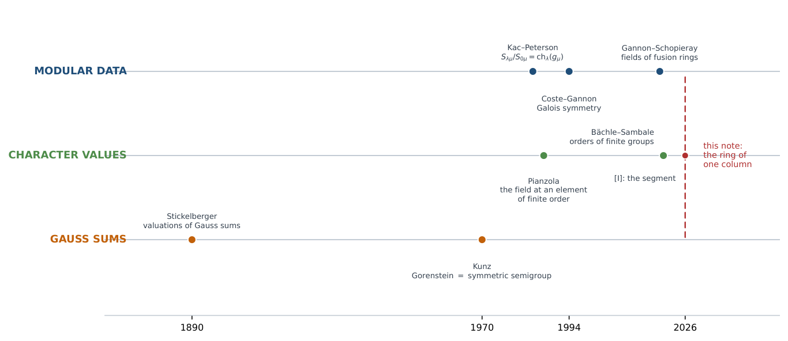
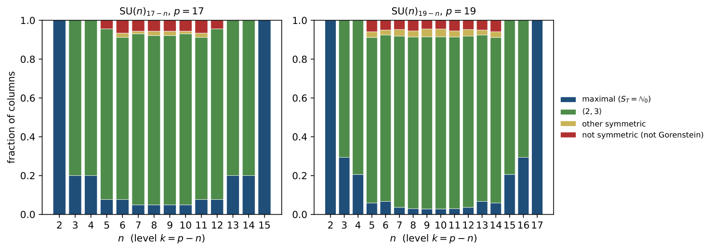

The order generated by a column of the SU(n)ₖ S-matrix is locally a numerical semigroup ring (Part I)
At a glance
What the paper contributes
A column μ of the modular S-matrix of SU(n)k, normalised by its first entry, generates a ring Aμ of character values. Its field was known (Gannon–Schopieray); the paper determines the ring when the height p = n + k is prime.
- The decomposition (Lemma 1, Proposition 2): Aμ = ℤ[ζm] ⊗ CT, a maximal cyclotomic factor fixed by the charge under the centre, and an order CT that depends only on the reduced spectrum T ⊂ 𝔽p; the index is a power of p.
- The exact semigroup (Theorem 3, Corollary 5): locally at p, CT is a monomial ring whose valuations form a numerical semigroup ST, written by Gauss sums and Stickelberger's theorem; the index is pφ(m)δ, δ the number of gaps.
- Read in 𝔽p (Theorem 4): when p > (n−1)(n−2), and for every p when n ≤ 12, ST is generated by e and the j with Mhj(T) ≠ 0.
- One semigroup, every property (Corollaries 6–8, Propositions 9–10): Gorenstein ⇔ ST symmetric (Kunz), exponent p when the conductor is small, the vacuum is maximal, level–rank keeps ST, the conformal weight sees M2.
- Counts and extremes (Propositions 11–12, §6): a closed count of the maximal columns, the largest defect (n−1)(n−2)/2 attained exactly by the trinomials Xn + aX + b, and the first non-Gorenstein column at prime height, SU(5)12.
🚀 Start here: Proposition 2: the ring of a column is Z[ζₘ] ⊗ C_T, and its index is a power of p.
Main results:
- Proposition 2: the ring of a column is Z[ζₘ] ⊗ C_T, and its index is a power of p
- Theorem 3: locally at p, C_T is the monomial ring of the numerical semigroup S_T, and δ(T) is its number of gaps
- Theorem 4: when p > (n−1)(n−2), or n ≤ 12, the semigroup is read in Fₚ from the nonzero power sums Mhⱼ(T)
- Corollary 6: a column ring is Gorenstein if and only if its semigroup is symmetric
🗺️ Map of the results (click a box to go to it)
Dependencies in the written proof: an arrow A → B means that this proof of B uses A. Every result rests on its written proof; the tags record what was checked besides, and each statement's “Evidence & scope” block says how far. The colour of a box is its strongest tag, in the order above; the tags in the box give the rest. Boxes with a thick border are the main results; click a box to read the statement.
📐 Setting (copied from the paper, §1–§3)
(Abstract) Fix a column \(\mu \) of the modular \(S\)-matrix of \({\mathrm{SU}}(n)_k\) and let \(A_\mu \) be the ring generated by the ratios \(S_{\lambda \mu }/S_{0\mu }\): the character values of \({\mathrm{SU}}(n)\) at the element of finite order that labels \(\mu \). (§1) For \({\mathrm{SU}}(n)\) at level \(k\) and integrable weights \(\lambda ,\mu \),
Throughout, \(p\) is an odd prime, \(n\ge 2\), \(k=p-n\ge 1\), \(\zeta _N=e^{2\pi i/N}\), and for a column \(\mu \) we write \({\mathcal{O}}_\mu \) for the integers of the field \(K_\mu \) of \(A_\mu \). (§2) Write \(\ell _i=\sum _{j\ge i}\mu _j+n-i\) (\(1\le i\le n\)), \(L=\sum _i\ell _i\), and fix integers \(u,v\) with \(up+vn=1\). The eigenvalues of \(g_\mu \) on \(\mathbb C^n\) are \(\zeta _{np}^{n\ell _i-L}\), and
The \(\ell _i\) are distinct in \([0,p-1]\), so \(T=T_\mu =\{ t_1,\dots ,t_n\} \subset {\mathbb {F}}_p\) has \(n\) elements, and \(\sum _it_i=L(1-nv)=Lup\equiv 0\): the spectrum is centred. The scalar \(\eta _\mu \) is a root of unity of order \(m=m_\mu \) dividing \(n\). (proof of Lemma 1) With \(y_t=\zeta _p^t\), …Let \(C_T={\mathbb {Z}}[e_1(y_T),\dots ,e_{n-1}(y_T)]\subset {\mathbb {Z}}[\zeta _p]\), \(H_T=\{ a\in {\mathbb {F}}_p^\times :aT=T\} \) of order \(h\), and \(E_T={\mathbb {Q}}(\zeta _p)^{H_T}\), of degree \(e=(p-1)/h\). From now on \(\delta (T)=v_p[{\mathcal{O}}_{E_T}:C_T]\). (§3) Let \(\omega :{\mathbb {F}}_p^\times \to {\mathbb {Z}}_p^\times \) be the Teichmüller character, and put
Since \(\omega (t)\equiv t\), \(b_j=0\) exactly when the power sum \(M_{hj}(T)=\sum _{t\in T}t^{hj}\) is nonzero in \({\mathbb {F}}_p\).
2 The spectrum and the centre
↳ Used in: Proposition 2
The complete symmetric function \(h_{p-n}\) is the character of \(\operatorname {Sym}^{p-n}\mathbb C^n\). With \(y_t=\zeta _p^t\), \(\prod _{t\in T}(1-y_tX)\prod _{t\notin T}(1-y_tX)=1-X^p\), so \(\sum _jh_j(y_T)X^j=\prod _{t\notin T}(1-y_tX)/(1-X^p)\) and \(h_{p-n}(y_T)\) is the top coefficient of the numerator, \((-1)^{p-n}\prod _{t\notin T}y_t=(-1)^{n-1}\), because \(\sum _{t\in {\mathbb {F}}_p}t=0=\sum _{t\in T}t\). By homogeneity \(\operatorname {ch}_{h_{p-n}}(g_\mu )=(-1)^{n-1}\eta _\mu ^{\, p-n}=\pm \eta _\mu ^{\, p}\), and \(p\) is invertible modulo the order of \(\eta _\mu \).
🖼️ Figure 1

Three lanes, and this note at the crossing. Modular data: from Kac–Peterson’s formula to the fields of Gannon and Schopieray; the question ends at a field. Character values: the field at an element of finite order (Pianzola), the order for finite groups (Bächle–Sambale), the order at the principal element ( [ 10 ] ). Gauss sums and semigroups: Stickelberger’s valuations make the ring monomial, and Kunz reads the Gorenstein property off its semigroup.
\(A_\mu ={\mathbb {Z}}[\zeta _m]\otimes C_T\), \(K_\mu ={\mathbb {Q}}(\zeta _m)E_T\), and
a power of \(p\).
↳ Used in: Corollary 5
The fundamental characters generate the representation ring, so \(A_\mu ={\mathbb {Z}}[e_j(g_\mu )]\) with \(e_j(g_\mu )=\eta _\mu ^je_j(y_T)\); with Lemma 1, \(A_\mu ={\mathbb {Z}}[\eta _\mu ]\cdot C_T\). As \(\gcd (m,p)=1\), \({\mathbb {Q}}(\zeta _m)\) and \(E_T\) are linearly disjoint with coprime discriminants, so \({\mathcal{O}}_{K_\mu }={\mathbb {Z}}[\zeta _m]\otimes {\mathcal{O}}_{E_T}\) and \({\mathbb {Z}}[\zeta _m]\cdot C_T\cong {\mathbb {Z}}[\zeta _m]\otimes C_T\); the index is \([{\mathcal{O}}_{E_T}:C_T]^{\varphi (m)}\). It remains to see that \(C_T\) is maximal at every prime \(r\ne p\). The prime \(r\) is unramified in \(E_T\), so \({\mathcal{O}}_{E_T}/r\) is a finite étale \({\mathbb {F}}_r\)-algebra, whose geometric points are the \(e\) embeddings \(\sigma _a\), \(a\in {\mathbb {F}}_p^\times /H_T\), followed by \(\zeta _p\mapsto \xi \), a primitive \(p\)-th root of unity in \(\overline{{\mathbb {F}}}_r\). The image of \(C_T\) separates them: \(e_j(y_T)\) goes to the coefficients of \(\prod _{t\in T}(X-\xi ^{at})\), and \(\{ \xi ^{at}\} =\{ \xi ^{a't}\} \) forces \(aT=a'T\). A subalgebra of a finite étale algebra that separates its geometric points is everything, so \(C_T+r{\mathcal{O}}_{E_T}={\mathcal{O}}_{E_T}\), and Nakayama gives \(C_T\otimes {\mathbb {Z}}_r={\mathcal{O}}_{E_T}\otimes {\mathbb {Z}}_r\).
🛡️ Evidence & scope
Program: the index [O_μ : A_μ] = p^φ(m)δ as a lattice index in all 662 columns of SU(3)_4, SU(4)_3, SU(3)_8, SU(8)_3, SU(5)_6, SU(6)_5. nivel_rango.py
3 The semigroup of a spectrum
Let \(R=C_T\otimes {\mathbb {Z}}_p\) and let \(\theta =g_1^{\, h}\), with \(g_1\) the Gauss sum below, a uniformizer of \(E_T\otimes {\mathbb {Q}}_p\) on which the Galois group acts by a character. Then \(R\) is the monomial ring
the valuations of its nonzero elements form the numerical semigroup \(S_T\), and \(\delta (T)=\# ({\mathbb {N}}_0\setminus S_T)\), the number of gaps.
🆕 Classical and new: built from Stickelberger's valuations of Gauss sums [Sti90; Rob01, Cor. 1] and Selmer's formula for the genus [Sel77].
↳ Used in: Corollary 5, Corollary 6, Corollary 8, Proposition 9, Proposition 10, Proposition 11, Proposition 12
Power sums. By Newton’s identities \(e_j\) is a polynomial in \(p_1,\dots ,p_j\) with denominators dividing \(j!\), invertible in \({\mathbb {Z}}_p\) as \(j\le n{\lt}p\); and every power sum is an integral polynomial in the \(e_j\). Hence \(R={\mathbb {Z}}_p[p_r(y_T):r\ge 1]={\mathbb {Z}}_p[\sigma _a(\alpha ):a\in {\mathbb {F}}_p^\times ]\) with \(\alpha =\sum _{t\in T}\zeta _p^t\).
Eigenvectors. \(R\) is stable under \(\operatorname {Gal}({\mathbb {Q}}_p(\zeta _p)/{\mathbb {Q}}_p)\cong {\mathbb {F}}_p^\times \), and \(p-1\) is a unit, so the projectors \(P_r=\frac1{p-1}\sum _a\omega (a)^{-r}\sigma _a\) act on \(R\), and \(R\) is generated as a \({\mathbb {Z}}_p\)-algebra by the \(P_r\alpha \). Substituting \(b=at\),
and \(B'_r=0\) unless \(h\mid r\), because \(T\) is \(H_T\)-stable. By Stickelberger’s theorem \(v_\pi (g_r)=r\) for \(0\le r{\lt}p-1\), with \(\pi =\zeta _p-1\) [ 15 , Cor. 1, p. 168 ] .
The uniformizer. Put \(\theta =g_1^{\, h}\). As \(\sigma _a g_r=\omega (a)^rg_r\), \(\theta \) is fixed by \(H_T\), lies in \(E_T\), and has \(\pi \)-valuation \(h\): it is a uniformizer of \(E_T\otimes {\mathbb {Q}}_p\), which is totally ramified of degree \(e\). For the same reason \(g_{hj}/\theta ^{\, j}\) and \(\theta ^{\, e}/p\) are fixed by all of \(\operatorname {Gal}\), lie in \({\mathbb {Q}}_p\), and have valuation \(0\): they are units of \({\mathbb {Z}}_p\). So \(P_{hj}\alpha =u_j\, p^{b_j}\theta ^{\, j}=u'_j\, \theta ^{\, j+eb_j}\) with \(u_j,u'_j\in {\mathbb {Z}}_p^\times \), and \(p\) is a unit times \(\theta ^e\).
Monomial. \(R\) is generated over \({\mathbb {Z}}_p\) by unit multiples of \(\theta ^s\), \(s\) in the generators of \(S_T\), so \(R=\sum _{s\in S_T}{\mathbb {Z}}_p\theta ^s\) inside \({\mathcal{O}}_{E_T}\otimes {\mathbb {Z}}_p={\mathbb {Z}}_p[\theta ]\), whose \({\mathbb {Z}}_p\)-basis is \(1,\theta ,\dots ,\theta ^{e-1}\). For each residue \(i\) modulo \(e\) let \(w_i=i+ec_i\) be the least element of \(S_T\) in that class (the Apéry set of \(S_T\) with respect to \(e\)). Then \(R=\bigoplus _{i{\lt}e}{\mathbb {Z}}_p\, p^{c_i}\theta ^i\) up to units, the valuations of \(R\setminus 0\) are exactly \(S_T\), and \(v_p[{\mathbb {Z}}_p[\theta ]:R]=\sum _ic_i\), which is the number of gaps of \(S_T\) by Selmer’s formula [ 6 ] .
🛡️ Evidence & scope
Program: δ(T) as a Hermite-normal-form index equals g(S_T) in every centred spectrum with 3 ≤ n ≤ 6, 5 ≤ p ≤ 31 (2414 orbits), and for n = 7, 8, 9 below the bound (11 331 orbits). censo.py
If \(p{\gt}(n-1)(n-2)\) (equivalently \(p\ge (n-1)(n-2)\), as \(p\) is odd), then \(S_T=\Gamma _T\) and
The same holds for every \(p\) when \(n\le 12\).
🆕 Classical and new: the conductor bound uses Schur's bound on the Frobenius number, as given by Brauer [Bra42].
↳ Used in: Corollary 7, Proposition 12
If the conductor \(c(\Gamma _T)\) is at most \(e+1\), every \(j+eb_j\) with \(b_j\ge 1\) is \(\ge e+1\ge c\) and already lies in \(\Gamma _T\). Let \(V=\{ t^h:t\in T\setminus 0\} \), a set of \(d\le n/h\) elements of the group \(\mu _e\subset {\mathbb {F}}_p^\times \) of \(h\)-th powers; each \(v\in V\) is hit \(h\) times, so \(M_{hj}(T)=h\, p_j(V)\). With \(A(Y)=\prod _{v\in V}(1-vY)\) and \(B(Y)=\prod _{v\in \mu _e\setminus V}(1-vY)\), \(A(Y)B(Y)=1-Y^e\). Newton’s identities \(p_j+a_1p_{j-1}+\dots +ja_j=0\), with \(j{\lt}e{\lt}p\) invertible, show by induction that the indices \(j{\lt}e\) with \(p_j(V)\ne 0\) and those with \(a_j\ne 0\) generate the same semigroup, and likewise for the coefficients of \(1/A=B/(1-Y^e)\), which are those of \(B\) below \(e\). So \(\Gamma _T\) is generated by \(e\) and a set \(G\) of integers at most \(D=\min (d,e-d)\): the support of \(A\) or that of \(B\), whichever has the smaller degree. The elements of \(G\) have no common factor \(g{\gt}1\): every exponent of \(A\) is below \(e\), hence a combination of \(G\) alone, so \(A\) would be a polynomial in \(Y^g\); its roots, and so \(V\), would be stable under \(\mu _g\), and as \(T\setminus 0\) is the full preimage of \(V\) under \(t\mapsto t^h\), \(T\) would be stable under \(\mu _{gh}\supsetneq H_T\). By Schur’s bound on the Frobenius number [ 4 ] , \(c(\Gamma _T)\le c(\langle G\rangle )\le (D-1)(D-2)\), which is \(0\) if \(D\le 2\); otherwise \(3\le D\le d\le n/h\) and \((D-1)(D-2)\le (n/h-1)(n/h-2)\le (n-1)(n-2)/h\le p/h\le e+1\) when \(p\ge (n-1)(n-2)\).
For \(n\le 12\), exchange \(A\) and \(B\) if necessary so that \(D=\deg A\le e/2\); then \(D\le n\le 12\), \(G=\operatorname {supp}A\setminus 0\), and \(D\in G\), the coefficient of \(Y^D\) being \(\pm \prod _vv\ne 0\). Moreover \(e\in \langle G\rangle \): every monomial of \(B=[A^{-1}]_{\le e-D}\) has its exponent in \(\langle G\rangle \), so if \(e\notin \langle G\rangle \) the coefficient of \(Y^e\) in \(AB\) would be \(0\), not \(-1\). Hence \(\Gamma _T=\langle G\rangle \), and since \(e\in \Gamma _T\) it suffices to show \(c(\Gamma _T)\le e\). Let \(\kappa \) be the multiplicity of \(\Gamma _T\). If \(\kappa =2\) or \(3\), a generator \(u\le D\) prime to \(\kappa \) gives \(c\le c(\langle \kappa ,u\rangle )\le 2(D-1){\lt}e\). If \(\Gamma _T=\langle a,b\rangle \) has two minimal generators, then \(ab\le e\): otherwise every degree up to \(e\) has a unique expression \(ia+jb\), the substitution \(Y^{ia+jb}\mapsto U^iV^j\) turns \(AB=1-Y^e\) into a factorisation of a binomial \(1-U^rV^s\), all of whose factors are polynomials in one monomial, while \(A\) contains both \(U\) and \(V\); so \(c=(a-1)(b-1){\lt}e\). In general the roots of the reciprocal \(F(X)=X^DA(1/X)\) are \(D\) elements of \(\mu _e\) with trivial stabiliser, and for \(r\in \mu _e\setminus 1\) the polynomial \(F(rX)-r^DF(X)\) is nonzero of degree at most \(D-\kappa \); counting the ordered pairs of roots with quotient \(r\) gives \(D(D-1)\le (e-1)(D-\kappa )\). Among the semigroups generated by integers at most \(12\) with multiplicity at least \(4\) and three or more minimal generators, only \(\langle 6,9,11\rangle \), \(\langle 6,10,11\rangle \), \(\langle 7,9,12\rangle \) and \(\langle 8,11,12\rangle \) are compatible with \(e\ge 2D\), this inequality and \(c(\Gamma _T){\gt}e\), in sixteen triples \((D,\Gamma _T,e)\). In each of them the truncation \(B=[A^{-1}]_{\le e-D}\) makes a coefficient of \(AB\) below degree \(e\) equal to a nonzero monomial in the leading coefficients of \(A\) — \(-2c_6c_9\), \(-2c_6c_{10}\), \(-c_9^2\), \(-2c_{11}c_{12}\) or \(3c_8^2c_{11}\) — which contradicts \(AB=1-Y^e\), since \(p{\gt}e\ge 23\).
🛡️ Evidence & scope
Program: the sixteen residual triples (D, Γ_T, e) of the case n ≤ 12, re-enumerated, and their obstructing coefficients computed symbolically. momentos_D12.py
Program: S_T = Γ_T in every orbit of the census (2414 + 11 331 orbits). censo.py
4 One semigroup, every property
\({\setlength{\fboxsep }{6pt}\setlength{\fboxrule }{0.6pt}\fcolorbox {azul!45}{fondoficha}{}}\)[O_μ:A_μ]=p^ ϕ(m_μ) #(N_0∖S_T_μ).\(\)
↳ Not used by another result of the paper.
\(\)
🛡️ Evidence & scope
Program: checked as an index of integer lattices in 662 columns. nivel_rango.py
\(A_\mu \) is Gorenstein if and only if \(S_{T_\mu }\) is symmetric.
🆕 Classical and new: Kunz's theorem on the value semigroup of a one-dimensional Gorenstein ring [Kun70].
↳ Not used by another result of the paper.
Away from \(p\) the order is maximal. At \(p\), \(A_\mu \otimes {\mathbb {Z}}_p\) is a product over the primes of the unramified \({\mathbb {Z}}[\zeta _m]\otimes {\mathbb {Z}}_p\) of copies of \(R\otimes W\), \(W\) unramified; each is a complete local domain with residue field of the form \({\mathbb {F}}_{p^f}\), equal to that of its normalisation, and value semigroup \(S_T\); Kunz’s theorem [ 13 , Thm., p. 749 ] says such a ring is Gorenstein exactly when its value semigroup is symmetric.
🛡️ Evidence & scope
Program: the first non-Gorenstein column at prime height, SU(5)_12, μ = (0,0,2,1): [O_μ : A_μ] = 17² and [A_μ : f] = 17 as lattice indices, with the control μ = 0. primera_no_gorenstein.py
If \(c(S_T)\le e\), then \(p\, {\mathcal{O}}_\mu \subseteq A_\mu \) and \({\mathcal{O}}_\mu /A_\mu \) is elementary abelian. This holds whenever \(p{\gt}(n-1)(n-2)\).
↳ Not used by another result of the paper.
\(p\, {\mathbb {Z}}_p[\theta ]=\theta ^e{\mathbb {Z}}_p[\theta ]\) lies in the monomial ring \(R\) exactly when every integer \(\ge e\) is in \(S_T\). For the second sentence, the proof of Theorem 4 gives \(S_T=\Gamma _T\) and \(c\le (n-1)(n-2)/h\le (p-1)/h=e\).
🛡️ Evidence & scope
Program: c(S_T) ≤ e and p·O_E_T ⊆ C_T on the lattice, in the 2414 orbits of the census and in the 2644 with 3 ≤ n ≤ 8, p ≤ 23. exponente.py
The column \(\mu =0\) is maximal: \(A_0={\mathcal{O}}_0\) for every \({\mathrm{SU}}(n)_k\) with \(n+k\) prime.
🆕 Classical and new: agrees with the preceding note [I], where at prime height the column μ = 0 lies outside every family of non-maximal segments.
↳ Not used by another result of the paper.
For \(\mu =0\), \(\ell _i=n-i\) and \(T\) is a centred arithmetic progression, \(-T=T\), so \(h\ge 2\); for \(k\ge 2\) its second moment is \(M_2=n(n^2-1)/12\ne 0\) in \({\mathbb {F}}_p\), since \(2\le n\le p-2\). Then \(1\in \Gamma _T\) and \(S_T={\mathbb {N}}_0\); here \(h=2\) exactly, since \(M_2\ne 0\) and \(M_r=0\) unless \(h\mid r\). For \(k=1\), \(T\) is \({\mathbb {F}}_p\) minus a point, \(C_T={\mathbb {Z}}\).
Under level–rank duality \({\mathrm{SU}}(n)_k\leftrightarrow {\mathrm{SU}}(k)_n\), the spectrum of the transposed column is \(T'=-({\mathbb {F}}_p\setminus T)\), and \(C_{T'}=\sigma _{-1}(C_T)\): the semigroup, the index \(\delta \), the conductor and the Gorenstein property are preserved. Only the central factor \(\varphi (m)\) may change.
↳ Not used by another result of the paper.
For a partition in an \(n\times k\) box, the sets \(\{ \lambda _i+n-i\} \) and \(\{ n-1+j-\lambda '_j\} \) are complementary in \(\{ 0,\dots ,n+k-1\} \) [ 5 , I.(1.7) ] ; reducing modulo \(p=n+k\) and centring gives \(T'=-({\mathbb {F}}_p\setminus T)\). Next, \(\prod _{t\in T}(1-y_tX)\cdot \prod _{t\notin T}(1-y_tX)=1-X^p\), so the elementary symmetric functions of \(y_{{\mathbb {F}}_p\setminus T}\) are the coefficients of a power series with integral coefficients in those of \(y_T\), and conversely: \(C_{{\mathbb {F}}_p\setminus T}=C_T\). Finally \(\sigma _{-1}\), complex conjugation, carries \(C_{{\mathbb {F}}_p\setminus T}\) to \(C_{T'}\), and \(\sigma _{-1}\theta =\omega (-1)^h\theta =\pm \theta \), so it preserves the monomial structure and \(S_T\).
🛡️ Evidence & scope
Program: three level-rank pairs, every column, classes (h, gaps) in the proportion n/k. nivel_rango.py
Let \(\Delta _\mu =\bigl(|\mu +\rho |^2-|\rho |^2\bigr)/2p\) be the conformal weight of \(\mu \), with roots of square length \(2\), so that \(|\rho |^2=n(n^2-1)/12\) and \(e^{2\pi i\Delta _\mu }\) is the eigenvalue of the modular matrix \(\mathcal T\) at \(\mu \) up to the central charge [ 11 , Thm. 13.8 ] . Then
so \(M_2(T_\mu )=0\) if and only if \(p\) does not divide the order of the root of unity \(e^{2\pi i\Delta _\mu }e^{\pi i|\rho |^2/p}=e^{\pi i|\mu +\rho |^2/p}\). If moreover \(H_T\) is trivial, then \(\delta (T)=1\) if and only if \(M_2(T)M_3(T)\neq 0\); so the index of the column is \(p^{\varphi (m)}\) exactly when both moments are nonzero, and the conformal weight decides the first of the two.
↳ Not used by another result of the paper.
In the coordinates of §2, \(\mu +\rho \) is \((\ell _1,\dots ,\ell _n)\) modulo \((1,\dots ,1)\), so \(|\mu +\rho |^2=\sum _i(\ell _i-L/n)^2=\sum _i\ell _i^2-L^2/n\). With \(t_i=\ell _i-vL\) and \(vn\equiv 1\), \(\sum _it_i^2\equiv \sum _i\ell _i^2-2vL^2+nv^2L^2\equiv \sum _i\ell _i^2-L^2/n\). The root of unity is \(e^{2\pi iQ/2np}\) with \(Q=n|\mu +\rho |^2\in {\mathbb {Z}}\), and as \(p\nmid 2n\) its order is prime to \(p\) exactly when \(p\mid Q\). For the second sentence, \(h=1\) gives \(e=p-1\ge 4\). The only semigroup of genus one is \(\langle 2,3\rangle \). By Theorem 3 an integer below \(e\) lies in \(S_T\) exactly when it is a sum of indices \(j{\lt}e\) with \(M_j\neq 0\); \(M_1=0\), so \(1\notin S_T\), and \(2\) and \(3\) lie in \(S_T\) exactly when \(M_2\) and \(M_3\) are nonzero, and then \(S_T\supseteq \langle 2,3\rangle \) has at most one gap.
🛡️ Evidence & scope
Program: the congruence M₂ ≡ |μ+ρ|² in all 1820, 4368 and 1540 columns of SU(5)_12, SU(6)_11, SU(4)_19; the genus-one criterion in every orbit with p ≤ 31, n ≤ 9. peso_conforme.py
5 How many columns of each kind
Let \(2\le n\le p-2\), and for \(h\mid p-1\) let \(e=(p-1)/h\), \(G_e\subset {\mathbb {F}}_p^\times \) the subgroup of order \(e\), and \(Z_{p,e}(d)\) the number of \(d\)-subsets of \(G_e\) with sum \(0\). The number of columns of \({\mathrm{SU}}(n)_{p-n}\) with \(S_T={\mathbb {N}}_0\) is
↳ Not used by another result of the paper.
\(S_T={\mathbb {N}}_0\) exactly when \(1\in S_T\), and a generator \(j+eb_j\) equals \(1\) only for \(j=1\), \(b_1=0\), that is when \(M_h(T)\ne 0\). If \(h=1\) this fails, \(M_1=\sum T=0\). For \(h{\gt}1\), \(T\setminus 0\) is a union of \(d\) cosets of \(H_T\), so \(n=hd\) or \(hd+1\) according as \(0\notin T\) or \(0\in T\), and every such set is centred; and \(M_h=h\sum _{u\in U}u\) with \(U=\{ t^h\} \subset G_e\) of size \(d\). If \(\sum U\ne 0\) the stabiliser is exactly of order \(h\), since a larger one would kill \(M_h\). So the sets with \(S_T={\mathbb {N}}_0\) and stabiliser of order \(h\) are counted by \(\binom ed-Z_{p,e}(d)\), the families for different \(h\) are disjoint, and each centred spectrum stands for \(n\) columns.
🛡️ Evidence & scope
Program: the formula against enumeration: 30 of 30 pairs (p, n), p = 17, 19. maximales.py
6 The first column that is not Gorenstein
For every centred \(T\) of size \(n\ge 3\), \(\delta (T)\le (n-1)(n-2)/2\), with equality exactly when \(\prod _{t\in T}(X-t)=X^n+aX+b\) with \(ab\ne 0\); then \(\Gamma _T=S_T=\langle n-1,n\rangle \). Such \(T\) exist for every sufficiently large prime \(p\).
✅ Checked when this page was built: GenusBound.lean compiles with Lean 4.35.0, no errors, no sorry. Axioms — genus_le_D, eq_pair_of_genus_eq, genus_pair_n: propext, Classical.choice, Quot.sound.
Reproduce: Lean 4.35.0, Mathlib f0b4c8150aa0; in that Lean project, lake env lean GenusBound.lean (SHA-256 of the compiled file: 3c315a332e4ffcc2…; a source page on this site may show it with comments edited, under its own hash).
🆕 Classical and new: existence for large p from the count of Bank, Bary-Soroker and Rosenzweig [BBR15, Thm. 2.3].
↳ Not used by another result of the paper.
A numerical semigroup of multiplicity \(\kappa \) generated in degrees at most \(D\) has its Apéry elements modulo \(\kappa \) at most \(D,2D,\dots ,(\kappa -1)D\), so its genus is at most \((\kappa -1)(D-1)/2\le (D-1)(D-2)/2\); with \(\delta (T)=g(S_T)\le g(\Gamma _T)\) and \(D\le n\) this is the bound. Equality forces \(D=n\), \(h=1\), \(0\notin T\) and \(\kappa =n-1\), hence \(\Gamma _T=\langle n-1,n\rangle \), and by Newton the only coefficients of \(\prod (X-t)\) besides the leading one sit in degrees \(1\) and \(0\). Conversely, for a trinomial with \(n\) distinct roots the quotients of distinct roots are all different (if \(x=ry\) with \(r\ne 1\), then \(a(r-r^n)y+b(1-r^n)=0\) fixes \(y\)), so \(n(n-1)\le p-2\), the conductor \((n-1)(n-2)\) is below \(e=p-1\), and \(S_T=\Gamma _T\). Existence: Bank, Bary-Soroker and Rosenzweig [ 3 , Thm. 2.3 ] count the polynomials of a given factorisation type in the short interval \(f+{\mathbb {F}}_p[X]_{\le m}\); we use it with \(f=X^n\), \(m=1\), which they allow when \(p\nmid n(n-1)\), as here since \(n{\lt}p\), and with the type \((1,\dots ,1)\). The number of pairs \((a,b)\) for which \(X^n+aX+b\) splits into linear factors is then \(p^2/n!+O_n(p^{3/2})\), while \(ab=0\) or a repeated root excludes \(O(p)\) of them.
🖼️ Figure 2

The columns of \({\mathrm{SU}}(n)_{p-n}\) by the semigroup \(S_T\) of their spectrum, computed with the exact formula of Theorem 3; each centred spectrum stands for \(n\) columns. Maximal columns (blue) have \(A_\mu ={\mathcal{O}}_\mu \); \(\langle 2,3\rangle \) (green) has one gap; the other symmetric semigroups (gold) are Gorenstein with more gaps; the red ones are not Gorenstein. The bars for \(n\) and \(p-n\) agree, as level–rank duality demands.
🛡️ Evidence & scope
Program: n = 4, p ≤ 71: every split trinomial gives δ = 3 and conversely; n = 5, p ≤ 71: only p = 67, all 66 give δ = 6. maximo.py
References
- 1
L. Stickelberger, Ueber eine Verallgemeinerung der Kreistheilung, Math. Ann. 37 (1890), 321–367. 🔎 find it
- 2
E. Verlinde, Fusion rules and modular transformations in 2D conformal field theory, Nucl. Phys. B 300 (1988), 360–376. 🔎 find it
- 3
E. Bank, L. Bary-Soroker, L. Rosenzweig, Prime polynomials in short intervals and in arithmetic progressions, Duke Math. J. 164 (2015), 277–295; arXiv:1302.0625.
- 4
A. Brauer, On a problem of partitions, Amer. J. Math. 64 (1942), 299–312. 🔎 find it
- 5
I. G. Macdonald, Symmetric functions and Hall polynomials, 2nd ed., Oxford University Press, 1995. 🔎 find it
- 6
E. S. Selmer, On the linear diophantine problem of Frobenius, J. reine angew. Math. 293/294 (1977), 1–17. 🔎 find it
- 7
A. Bächle, B. Sambale, Orders generated by character values, Monatsh. Math. 191 (2020), 665–678; arXiv:1910.00209.
- 8
A. Coste, T. Gannon, Remarks on Galois symmetry in rational conformal field theories, Phys. Lett. B 323 (1994), 316–321. 🔎 find it
- 9
T. Gannon, A. Schopieray, Algebraic number fields generated by Frobenius-Perron dimensions in fusion rings, arXiv:1912.12260.
- 10
C. Marín, The ring of character values depends only on the segment: \({\mathrm{SU}}(n)\), \({\mathrm{Sp}}(2m)\) and \({\mathrm{GL}}(n)\) at a torsion element, doi:10.5281/zenodo.22847476, 2026.
- 11
V. G. Kac, Infinite dimensional Lie algebras, 3rd ed., Cambridge University Press, 1990. 🔎 find it
- 12
V. G. Kac, D. H. Peterson, Infinite-dimensional Lie algebras, theta functions and modular forms, Adv. Math. 53 (1984), 125–264. 🔎 find it
- 13
E. Kunz, The value-semigroup of a one-dimensional Gorenstein ring, Proc. Amer. Math. Soc. 25 (1970), 748–751. 🔎 find it
- 14
A. Pianzola, On the arithmetic of the representation ring and elements of finite order in Lie groups, J. Algebra 108 (1987), 1–33. 🔎 find it
- 15
A. M. Robert, The Gross–Koblitz formula revisited, Rend. Sem. Mat. Univ. Padova 105 (2001), 157–170. 🔎 find it